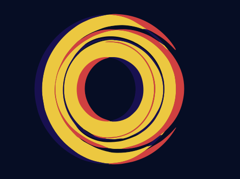

重力は移っていた
—— React の10年を git 履歴だけで読むと、誰が支えていたのか
Dan Abramov は2020年、React を支えていた。2024年には、もう支えていなかった。そして代わりに支えていた人の名前を、プロジェクトの外にいる多くの人は言えない。
これを知るために、誰にもインタビューしていない。リリースノートも一行も読んでいない。リポジトリが10年のあいだ、毎日自分について書き残してきたもの——git 履歴——を、ただ読んだだけだ。
エンジニアを語るとき、静かな前提が一つある。重要なのは、見える人だ、という前提。声の大きいレビュアー。登壇者の名前。コミット数ランキングの上位。けれどコードベースは、別の物語を記録している。そして、誰かにおもねる術を知らない。
だから読んでみた。29のオープンソースリポジトリ。55,343人のエンジニア。使ったのは git log と git blame だけ——サーベイも、AIトークンも、自己申告もなしに。
そこで浮かび上がったもののうち、いくつかが頭から離れない：
- React の重力は、定刻どおりに移っていた。 2016〜2025年、影響力は有名な顔のところに留まらなかった。移動していた——Abramov は2020年ごろ Architect のピークに昇り、やがて退いていく。Sebastian Markbåge は2024年までに、このデータセットで最も高い Anchor のシグナルに落ち着く。5回の世代交代が、履歴に淡々と書かれていた。誰も宣言しなかった。コードが記録していた。
- esbuild の構造は、一人の頭の中に収まっている。 重力の92.5%が、たった一人のエンジニアに集中している。これは脆さではない——むしろ、最も澄んだ一貫性のかたちかもしれない。設計の全体が一つの頭に収まり、委員会には保てない筋の通り方で保たれている。重力は、分散していなくても本物でありうる。
- 肩書きも知名度もないまま、構造を支えている人が440人いた。 メンテナのバッジもなく、語るほどの公開プロフィールもない。コミット数を数えるのをやめ、何が残っているかを測ったときに、はじめて浮かび上がる。
- 言語ファミリーには、それぞれの物理がある。 Go のリポジトリは重力が16%前後に集中し、Rust と Scala は7%前後。一人がどれだけ抱え込みうるかに、4〜5倍の開きがあった。
これが何なのかは、慎重に置いておきたい。スコアボードではないし、誰かの価値の判定でもない。シグナルは意図して狭くしてある——どれだけコミットしたかではなく、コミットしたうちのどれだけが数ヶ月後も残っているか。そして、それが変更の圧に耐えて残っているのか、それとも誰も触れようとしないから残っているのか。前者を、重力と呼んでみる。後者はもっと静かで、強さと見間違えやすい何かだ。
たぶん、ここが座って考える価値のある部分かもしれない。活動量は世界でいちばん見えやすいもので、そして、誰が構造を支えているかについては、ほとんど何も語らない。重力をかたちづくるエンジニアは、たいてい、その人が去った瞬間にはじめてチームが気づく人だ。
このレンズはオープンソースだ——EIS という小さな CLI で、読むのは git のメタデータだけ、コードの中身には触れない。29リポジトリすべての地図は、React の10年も含めて、ここにある：https://machuz.github.io/eis/research/oss-gravity-map/analysis/oss-gravity-map-ja.html
頭から離れない問いを、最後に置いておく。もし今夜、あなた自身のリポジトリでこれを走らせたら——コミット数ではなく、重力を——浮かび上がる名前は、あなたが予想する名前だろうか。
OrbitLens / machuz
